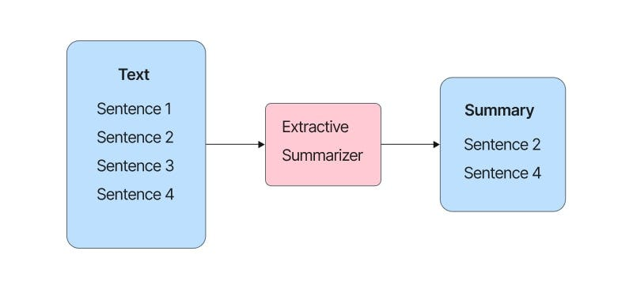

Hi, I'm Rohith Sai Gamini, a Computer Science professional with a Master's degree from the University at Buffalo - SUNY.
I specialize in Machine Learning, Deep Learning, and Data Science, with hands-on experience in implementing advanced algorithms and developing innovative solutions.
My strong background in programming, data analysis, and cloud services enables me to transform complex data into actionable insights.
Research Machine Learning Intern - University at Buffalo
• Led the implementation of Principal Component Analysis (PCA) for dimensionality reduction, enhancing data interpretability for subsequent machine learning tasks in bioinformatics research.
• Developed and optimized decision tree and random forest classifiers, achieving up to 95.26% accuracy through meticulous data preprocessing, recursive splitting, and cross-validation techniques.
• Led Spectral Clustering implementation with sparsified similarity graph and K-means on eigenvectors, achieving a Rand Index of 0.784 and Jaccard Coefficient of 0.337 on cho.txt dataset, enhancing cluster identification in high-dimensional data.

Developed a search system using Reddit's REST API data; indexed in SOLR using BM25 and Language models, enhancing result accuracy.

Developed a centralized platform for real estate using PostgreSQL, PHP, HTML, CSS, and JavaScript, optimizing the property search process using database operations.

Processed and analyzed a Kaggle dataset comprising 5,000+ telecom records, uncovering patterns, trends and formulating strategies could potentially reduce churn rates by an estimated 10%.

Created an NLP system using Large language models, attaining over 90% accuracy in generating concise text summaries from sources.
Utilized OpenCV (v4.5.4) and face recognition library to implement a robust face detection system and implemented face detection on a dataset of 200 images, accurately locating faces with bounding boxes.
An online platform to receive and act on complaints reported by students of private or public institutions, enabling prompt actions on any issue raised by them and to avail services more effectively.